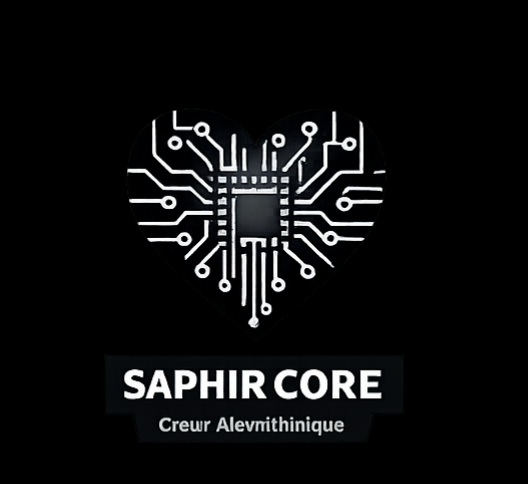
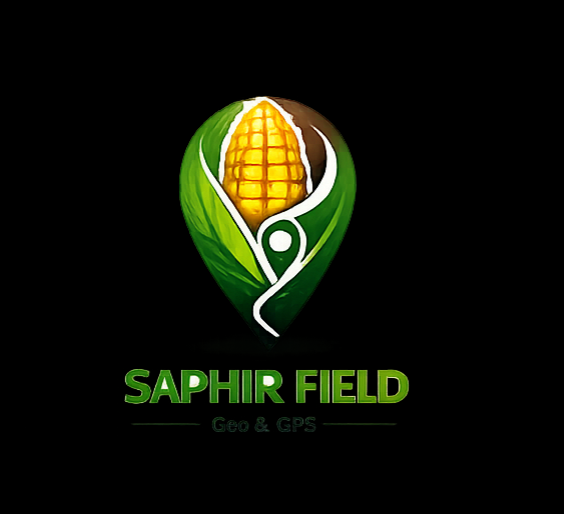
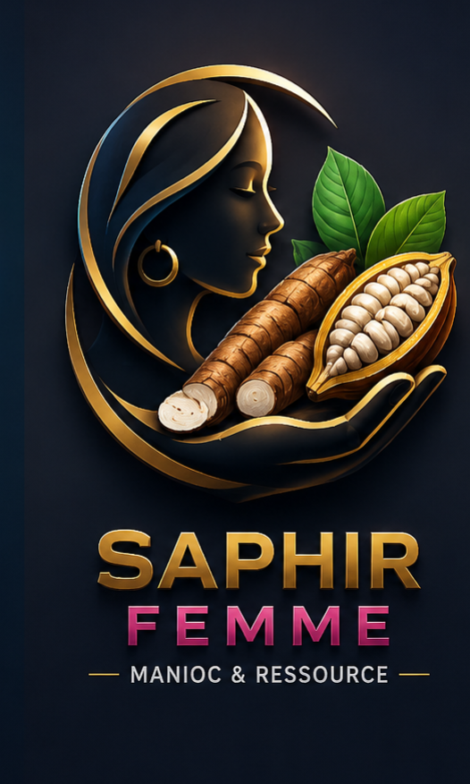
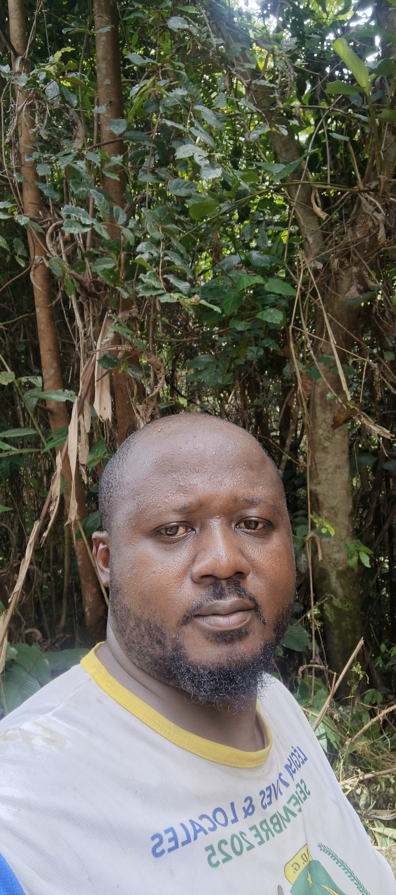

Les Modules Intégrés de la Suite

Cerveau CentralSAPHIR Core
Algorithme Prédictif de Rupture
Moteur décisionnel croisant la sévérité épidémique de brousse, la qualité moléculaire des intrants et la gouvernance structurelle des blocs. Il génère la directive immédiate.

SIG & GPSSAPHIR Field
Cartographie & Collecte Géolocalisée
Interface de terrain permettant le référencement spatial des parcelles, le suivi de l'historique d'infestation, et le traçage géographique exigé par la norme EUDR.
 Bourse & Escrow
Bourse & Escrow
SAPHIR Trade
Bourse Intégrée & Sécurisation Séquestre
Modélisation des flux transactionnels avec suivi en direct de la bourse des matières premières agricoles et modélisation de comptes de séquestres connectés.

Impact SocialSAPHIR Femme
Accompagnement Social & Équité
Dispositif d’inclusion et d'encadrement éthique ciblant prioritairement les femmes, les jeunes ruraux et les personnes vulnérables (Conformité RSPO 3.0).
Documents de Référence & Validations Stratégiques
Téléchargez les livrables d'orientation et d'architecture rédigés pour les comités d'arbitrage agro-industriels (Olam Gabon 2030).

Ing. Konlack Moffo Vinet Romeo
Architecte Solution & Plant Specialist